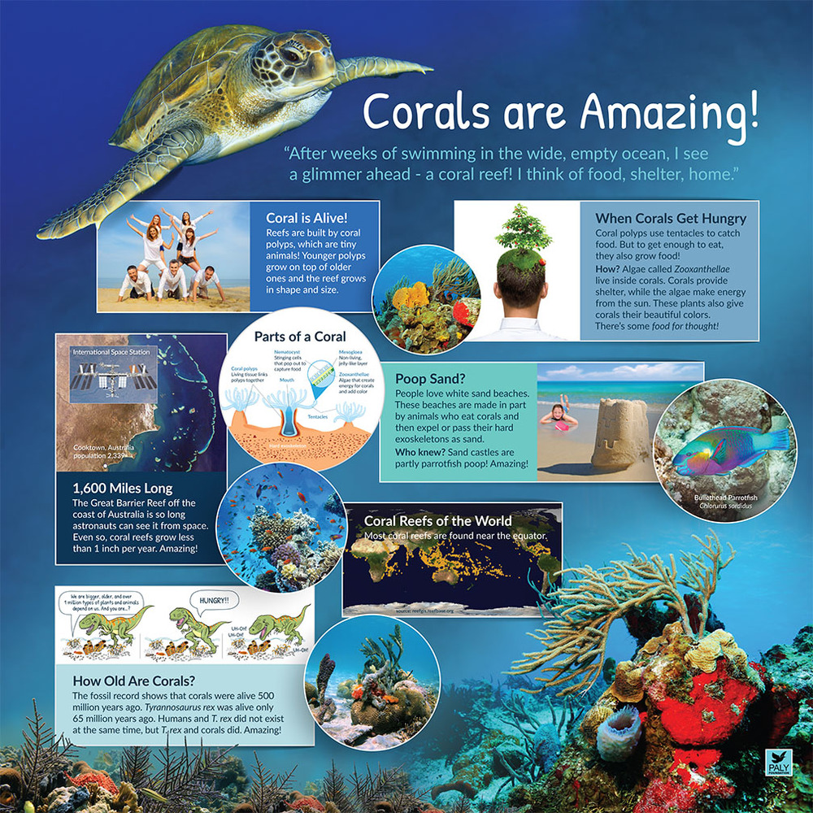

Insights and Call to Action: Preserving Our Coral Reefs
Credit: The winning design in the competition to design a poster for NatureExhibits c/o The Paly Foundation, Arizona, USA. Graphic design: Martina Lipovac; software: Adobe Illustrator, Adobe Photoshop; photos and graphics: Marine Photobank, Dollar Photo Club; year of project: 2015.
The Silent Crisis Beneath the Waves
Beneath the ocean's surface, a silent crisis unfolds. Coral reefs, often called the "rainforests of the sea," are facing unprecedented threats. These vibrant underwater ecosystems, home to 25% of all marine life, are not just natural wonders—they're vital lifelines for our planet and its inhabitants. From the Great Barrier Reef to the coral gardens of the Caribbean, these delicate structures are rapidly deteriorating, with far-reaching consequences for biodiversity, coastal communities, and global climate stability.
The Domino Effect: Causes and Consequences
The degradation of coral reefs is a complex issue with multiple interlinked causes:
- Climate Change: Rising sea temperatures trigger coral bleaching events, where stressed corals expel their symbiotic algae, often leading to death.
- Ocean Acidification: Increased CO2 absorption by oceans makes it harder for corals to build their calcium carbonate skeletons.
- Pollution: Runoff from agriculture, industry, and urban areas introduces harmful chemicals and excess nutrients into reef ecosystems.
- Overfishing: Disruption of marine food chains affects the delicate balance of reef ecosystems.
- Destructive Fishing Practices: Methods like dynamite fishing and trawling physically damage reef structures.
- Coastal Development: Construction and land reclamation projects can smother reefs with sediment and alter water flow patterns.
The consequences of reef degradation extend far beyond the loss of beautiful underwater scenery. Coral reefs provide critical ecosystem services, including coastal protection from storms, support for fisheries that feed millions, and potential sources for new medicines. Their loss threatens food security, livelihoods, and the very existence of many coastal and island communities.
A Global Response: From Policy to Personal Action
Addressing the coral reef crisis requires a multi-faceted approach:
- International Cooperation: Strengthening and enforcing global agreements on climate change, marine protection, and sustainable fishing practices.
- Marine Protected Areas (MPAs): Expanding and effectively managing networks of MPAs to give reefs respite from human pressures.
- Sustainable Tourism: Promoting responsible reef tourism that educates visitors and supports conservation efforts.
- Research and Innovation: Investing in coral restoration technologies, including assisted evolution and artificial reefs.
- Community Engagement: Empowering local communities to become stewards of their marine resources through education and sustainable livelihood programs.
- Sustainable Fishing: Implementing and enforcing regulations to prevent overfishing and destructive fishing practices.
Individual Impact: Small Actions, Big Difference
While the scale of the problem may seem overwhelming, individual actions can collectively make a significant impact:
- Reduce your carbon footprint through energy conservation and sustainable transportation choices.
- Choose reef-safe sunscreens and personal care products to minimize chemical pollution.
- Support sustainable seafood practices by making informed choices when purchasing fish.
- Participate in beach and underwater clean-ups to reduce marine debris.
- Educate yourself and others about the importance of coral reefs and the threats they face.
- Support organizations dedicated to coral reef conservation through donations or volunteer work.
- If visiting coral reefs, practice responsible tourism by not touching or stepping on corals, and choosing eco-friendly tour operators.
A Future Worth Fighting For
The fate of coral reefs hangs in the balance, but there is still hope. Through concerted global efforts, innovative solutions, and individual commitment, we can turn the tide on coral reef degradation. By protecting these underwater marvels, we're not just preserving natural beauty—we're safeguarding the future of our oceans, our climate, and ourselves. The time for action is now. Let's work together to ensure that future generations can experience the wonder and benefit from the invaluable services of healthy, thriving coral reef ecosystems.